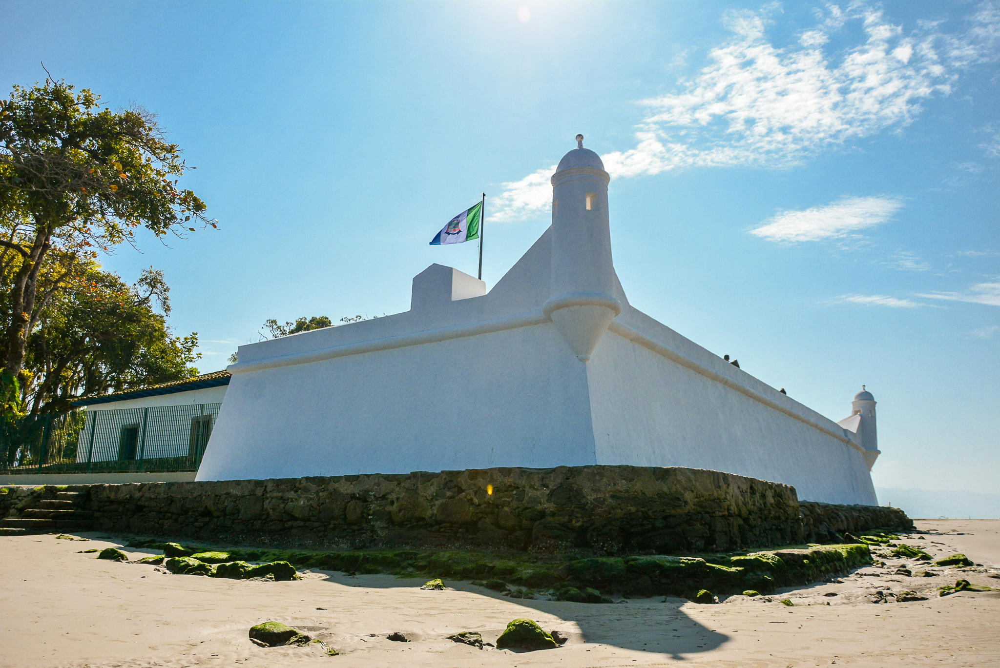
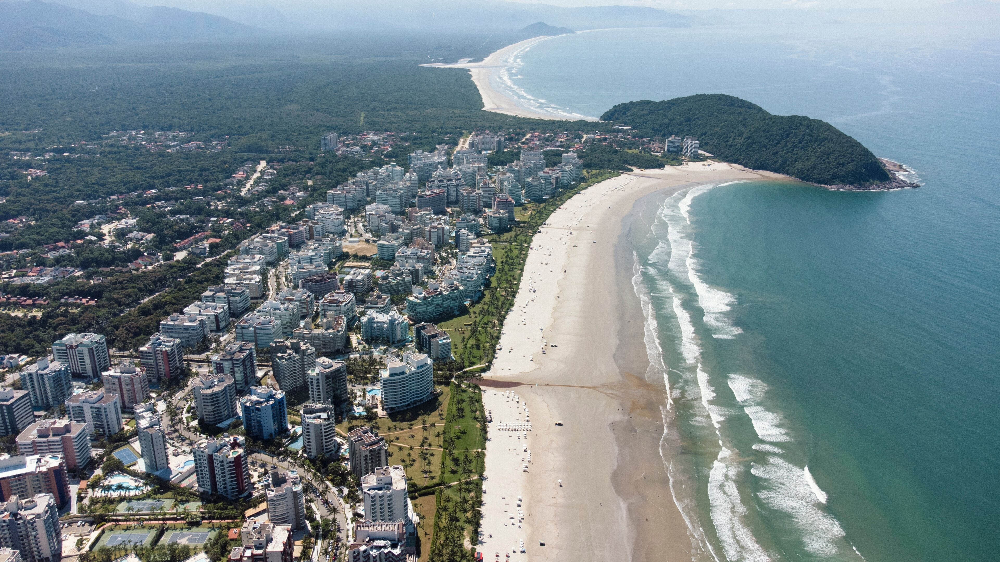

Bertioga é um convite para descobrir as belezas e histórias do litoral paulista. Aqui, praias, rios e a riqueza da Mata Atlântica se encontram para revelar a natureza, a cultura e as tradições que fazem da cidade um lugar especial. Conhecimento, turismo e identidade local, tudo em um só lugar.
Conheça a história, a importância e as riquezas naturais e culturais que fazem Bertioga única.
Bertioga é importante para o litoral paulista por suas riquezas naturais, históricas e culturais. Suas praias e áreas preservadas atraem turistas e protegem a biodiversidade. Além disso, seu patrimônio histórico e o turismo contribuem para a economia regional.
Bertioga está localizada no litoral do estado de São Paulo, na Baixada Santista, a cerca de 120 km da capital paulista. Situada entre a Serra do Mar e o Oceano Atlântico, destaca-se por suas praias e áreas de Mata Atlântica preservada.
Bertioga abriga o Forte São João, considerado uma das fortificações mais antigas do Brasil; Possui extensas áreas preservadas de Mata Atlântica e manguezais; É conhecida por suas praias, trilhas ecológicas e pela importância histórica na colonização do litoral paulista.
Bertioga possui uma economia baseada principalmente no turismo, no comércio, na pesca e nos serviços, que geram empregos e movimentam a economia local. Suas praias, pousadas e atrações naturais atraem visitantes e contribuem para o desenvolvimento da cidade.
Bertioga atrai visitantes com suas praias, trilhas ecológicas, rios e áreas de Mata Atlântica. A cidade também oferece atrações históricas, como o Forte São João, sendo um destino importante para o turismo e o lazer no litoral paulista.
Bertioga possui praias, manguezais, rios e extensas áreas de Mata Atlântica, que abrigam diversas espécies de animais e plantas. Essa riqueza natural contribui para a biodiversidade e para a preservação ambiental da região.
Descubra alguns dos destinos que valem a visita em Bertioga.
| Localização | Atração | Indicação | Nota dos visitantes |
|---|---|---|---|
| Centro | Forte São João | História e cultura | 9,0/10 |
| Riviera de São Lourenço | Riviera de São Lourenço | Praia e lazer | 9,0/10 |
| Região central | Parque Estadual Restinga de Bertioga | Ecoturismo e trilhas | 9,0/10 |
| Centro até Indaiá | Praia da Enseada | Lazer e passeios | 8,5/10 |
| Região de Itaguaré | Praia de Itaguaré | Natureza e surfe | 8,5/10 |
| Região de Guaratuba | Praia de Guaratuba | Natureza e tranquilidade | 8,5/10 |
| Boraceia | Praia de Boraceia | Praia e descanso | 8,0/10 |
| Centro | Canal de Bertioga | Passeios e paisagens | 8,0/10 |
| Região do Rio Itapanhaú | Vila de Itatinga | História e arquitetura | 8,0/10 |